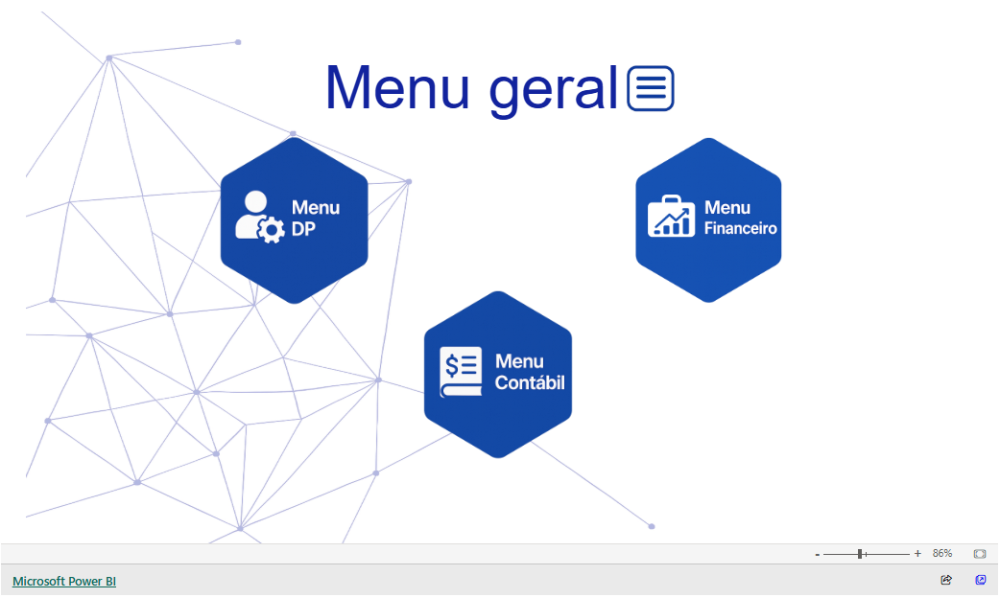

Painel Gestão Geral
Solução completa de BI e automação contábil para acompanhamento em tempo real dos processos da empresa, integrando Gestta, Notion, Conta Azul, PostgreSQL e Power BI.
Projeto real
Python
PostgreSQL
Power BI
APIs
Problema
dados espalhados entre ferramentas e baixa visibilidade operacional
Solução
pipeline integrado com atualização automática e views para gerenciamento e tomada de decisão
Impacto
gestão de produtividade, gargalos, inadimplência e fechamento